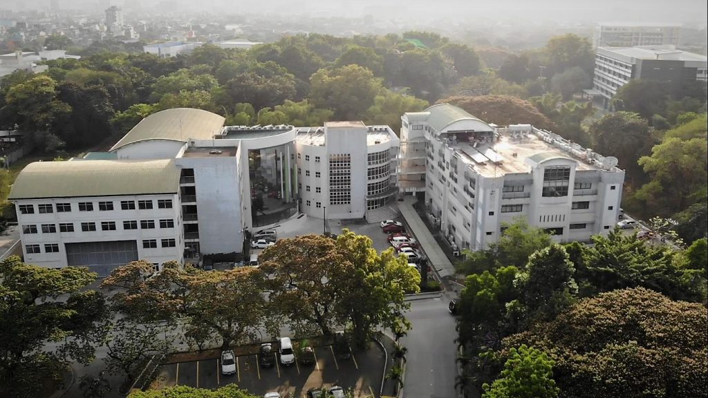

Computer engineering + community work
Hi, I'm
Sebastian Wolfgang (Seb) Canillas
Computer Engineering student, DOST-SEI Merit Scholar, and dedicated community leader. I like building at the intersection of circuits, code, and student-centered service.

